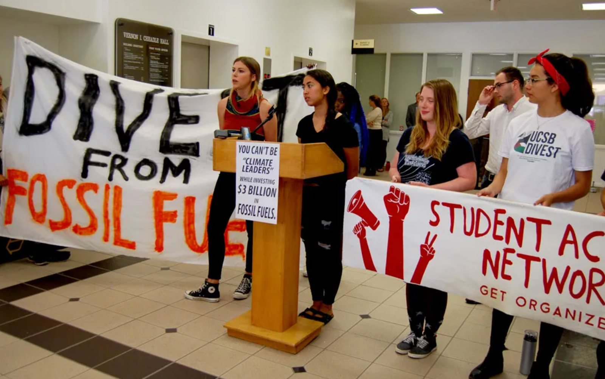
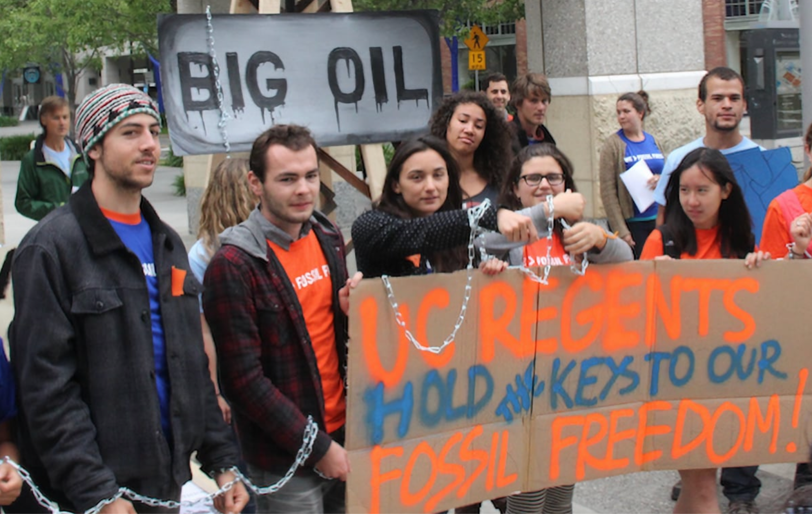

Starting 2012, UC students began organizing and formed Fossil Free UC In 2019, the UC Academic Senate voted overwhelmingly to formally appeal to the Board of Regents to divest On May 19, 2020, UC announced full divestment from fossil fuels
In 2012, students across all ten UC campuses began organizing and formed Fossil Free UC. The campaign was part of a broader national wave inspired by groups like 350.org, which argued that universities profiting from fossil fuels were complicit in climate change.
In 2017, UC Santa Barbara Chancellor Henry Yang became the first UC campus leader to endorse divestment, after students occupied the administration building for three days.

UCSB students occupying the administration building during the fossil fuel divestment campaign.
In 2019, the UC Academic Senate voted overwhelmingly to formally appeal to the Board of Regents to divest.
On May 19, 2020, UC announced full divestment from fossil fuels across its endowment, pension, and all working capital pools. This made UC the largest educational institution in the U.S. to fully divest.
The system’s portfolio had grown to $126 billion, and UC sold over $1 billion in fossil fuel assets. At the same time, it also surpassed its five-year goal of investing $1 billion in clean energy projects.
By this point, over 1,100 institutions representing $14 trillion in assets globally had pledged some form of fossil fuel divestment.

The Board of Regents had already voted in 2018 to formally incorporate ESG goals into investment decisions.
In April 2021, UC launched the UC Global Equity ex Fossil Fuel Fund — a fossil-free retirement savings option for employees within its $35 billion defined contribution plan serving more than 300,000 participants.
This effort was driven by faculty through the Academic Senate and by students through the UC Green New Deal group. UC’s Head of Defined Contribution, Marco Merz, emphasized that employees should be able to express their values through their retirement investments.
UCLA Sustainability acknowledged that the portfolio shift was symbolically powerful, while also expressing hope that it would push other major institutions to follow and strengthen a nationwide divestment movement that already included over 50 universities.
The UC’s fossil fuel divestment is often cited as a landmark victory, and in many ways it is. The largest public university system in the country moved a $126 billion portfolio away from fossil fuels and poured over $1 billion into clean energy.
But the victory came with caveats. UC leadership consistently framed the decision as “financial risk” management, not a moral stance — meaning the institution never formally acknowledged that profiting from climate destruction was ethically wrong, only that it was a bad bet.
Perhaps most importantly, the UC’s insistence on a purely financial framing set a precedent that has haunted subsequent divestment campaigns: if the only acceptable reason to divest is poor returns, then movements demanding divestment on human rights or ethical grounds can be dismissed before the conversation even begins.
The fossil fuel divestment story is a success, but it is also a cautionary tale about what is lost when institutions strip moral language from moral decisions.
Public commentary on the divestment decision included statements from Chief Investment Officer Jagdeep Singh Bachher and Chair of the University Regents’ Investment Committee Richard Sherman, both of whom helped frame the move in terms of long-term financial sustainability and investment performance rather than explicit moral condemnation of fossil fuel extraction.